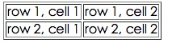
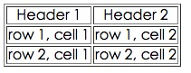
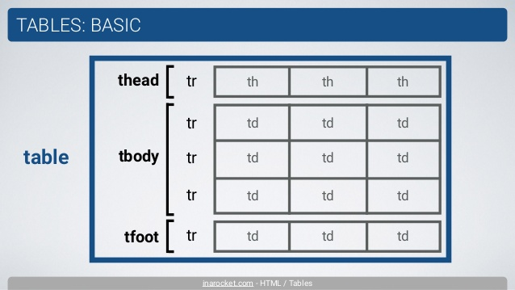

HTML テーブル
HTML テーブルは<table>タグで定義されます。
HTML テーブルは、構造化データを表示するためのマークアップ言語要素です。
各テーブルには複数の行があり（<tr>タグで定義）、各行は複数のセルに分割されます（<td>タグで定義）、テーブルには見出し行（<th>）を含めることができ、列の見出しを定義するために使用します。
- tr: tr は table row の略で、テーブルの1行を表します。
- td: td は table data の略で、テーブルのデータセルを表します。
- th: th は table header の略で、テーブルのヘッダーセルを表します。
データセルには、テキスト、画像、リスト、段落、フォーム、水平線、テーブルなどを含めることができます。
HTML テーブル生成器：https://www.jyshare.com/front-end/7688/。
以下は簡単な HTML テーブルの例です:
例
<thead>
<tr>
<th>列見出し1</th>
<th>列見出し2</th>
<th>列見出し3</th>
</tr>
</thead>
<tbody>
<tr>
<td>行1、列1</td>
<td>行1、列2</td>
<td>行1、列3</td>
</tr>
<tr>
<td>行2、列1</td>
<td>行2、列2</td>
<td>行2、列3</td>
</tr>
</tbody>
</table>
上記のテーブル例のコードでは、<table> 要素はテーブル全体を表し、<thead> と <tbody> の2つの主要部分を含みます。
<thead > はテーブルの見出し部分を定義するために使用されます:<thead > 内では、<th > 要素を使用して列の見出しを定義します。上記の例では、列見出しはそれぞれ「列見出し1」、「列見出し2」、「列見出し3」です。
<tbody > はテーブルの本体部分を定義するために使用されます:<tbody > 内では、<tr > 要素を使用して行を定義し、各行で <td > 要素を使用してセルデータを定義します。上記の例には2行のデータがあり、各行には3つのセルが含まれます。
<th > 要素を使用して列見出しを定義すると、テーブル内で太字で表示され、通常のセルと区別できます。
HTML テーブルには、<tfoot > （テーブルのフッター）や <caption > （テーブルのキャプション）などの他の部分を含めることもできます。<tfoot > はテーブルの下部に概要や統計情報などを定義するために使用できます。<caption > はテーブル全体のタイトルを定義するために使用できます。
HTML テーブルは、セルの結合や行/列をまたぐ操作、その他のスタイルや属性の適用もサポートしており、さまざまなニーズに対応できます。
CSS を使用して、テーブルのスタイルと外観をさらにカスタマイズすることもできます。
オンライン例
例
試してみる »
（このページの下部にさらに多くの例があります。）
テーブルの例
例
ブラウザでの表示は次のとおりです:

HTML テーブルと枠線属性
枠線属性を定義しない場合、テーブルに枠線は表示されません。これが役立つこともありますが、ほとんどの場合は枠線を表示したいと思います。
枠線属性を使用して、枠線付きのテーブルを表示します：
例
HTML テーブルのヘッダー
テーブルのヘッダーは <th> タグで定義します。
ほとんどのブラウザでは、ヘッダーは太字で中央寄せのテキストとして表示されます：
例
ブラウザでの表示は次のとおりです：

その他の例
枠線のないテーブル
この例では、枠線のないテーブルを示します。
テーブル内のヘッダー (Heading)
この例では、テーブルのヘッダーを表示する方法を示します。
キャプション付きのテーブル
この例では、キャプション付きのテーブルを示します。
行または列をまたぐテーブルセル
この例では、行または列をまたぐテーブルセルを定義する方法を示します。
テーブル内のタグ
この例では、異なる要素内で要素を表示する方法を示します。
セルパディング (Cell padding)
この例では、Cell padding を使用してセルの内容と枠線の間に空白を作成する方法を示します。
セル間隔 (Cell spacing)
この例では、Cell spacing を使用してセル間の距離を広げる方法を示します。
HTML テーブルタグ
| タグ | 説明 |
|---|---|
| <table> | テーブルを定義する |
| <th> | テーブルのヘッダーセルを定義する |
| <tr> | テーブルの行を定義する |
| <td> | テーブルのセルを定義する |
| <caption> | テーブルのキャプションを定義する |
| <colgroup> | テーブルの列グループを定義する |
| <col> | テーブル列の属性を定義する |
| <thead> | テーブルのヘッダー部分を定義する |
| <tbody> | テーブルの本体を定義する |
| <tfoot> | テーブルのフッターを定義する |
demo
140***0261@qq.com
上の図のテーブルのように、tr は行数、td はセル数、th は見出しの性質を持つ td です。
tr と td（th は td と同じ）を決める方法:
1、上から下へ、最も細かく分けた行数が tr の数になります。
2、上記は3つの基本的なセル形式です。A は基本セルで、他の変種はすべて基本セルを結合してできたものです。B は上下のセルを結合してできたもので、
C は左右のセルを結合したものです。結合後の B 種セルは2行目の最初のセルとして数え、C 種セルは4行目の最初のセルとして数えます（上の表に従って
上から下へ、左から右へ数えます）。したがって、1行目は6つの td、2行目は6つの td、3行目は5つの td、4行目は1つ、5行目は6つの td、6行目は5つの td です。
結合後、colspan と rowspan を使用して、B および C 変種セルが横方向または縦方向にいくつのセルを占めるかを示します（自分自身を含む）。
3、4番目の変種セルは横方向と縦方向の両方に結合します。この場合、rowspan と colspan を同時に指定します（スペースで区切る）。
結合後のセルの帰属原則は左上優先です。つまり、下は上に、右は左に属し、左上に近いほど優先されます。
demo
140***0261@qq.com
wangfeng
214***828@qq.com
HTML 時間割の例：https://www.jyshare.com/codedemo/2902
wangfeng
214***828@qq.com
Slient
che***oka@qq.com
HTML Work 表の例：https://www.jyshare.com/codedemo/2913
Slient
che***oka@qq.com
Dichter
328***8204@qq.com
参考アドレス
HTML の table はおおまかに3つの部分に分けられます：
thead, tbody, tfoot は3つの部屋のようなもので、それぞれの部屋に物を入れることができます。
<tr> </tr>このタグは3つの部屋の中に置かれるものです。それぞれの<tr> </tr>がテーブルの1行です。
テーブルの各行は、1つ1つのセルに分けられます。
各セルはデータを格納するためのもので、このデータは2種類に分けられます：1つはデータの名前、もう1つはデータ自体です。
用 <th></th>データの名前（見出し）を表し、
<td></td>
実際のデータ内容を表します。
簡単な例：
Dichter
328***8204@qq.com
参考アドレス
CHINA 陈
252***4754@qq.com
テーブルの3要素table、tr、td どれが欠けてもいけません。
<table> タグのよく使われる属性：
<tr> タグのよく使われる属性:
<td>、<th> タグのよく使われる属性:
引用符内の数字とカラーコードは変更できます。
CHINA 陈
252***4754@qq.com
猪八戒
996***933@qq.com
テーブル構造の意味論的なタグ：
テーブル内容タグ：
列結合：colspan
行結合：rowspan
セル内余白：cellpadding
セル間余白：cellspacing
col と colgroup は、テーブルの指定列のスタイルを簡単に定義するために使用します。
猪八戒
996***933@qq.com
菜鸟01
180***9324@qq.com
th（table head）-- ヘッダー
tr (table row)-- テーブル行
td (table data)-- テーブルデータ
菜鸟01
180***9324@qq.com